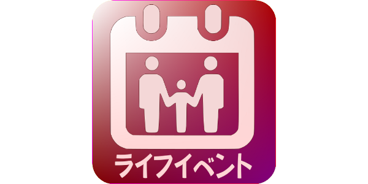

初めまして。このサイトは私、キンの自己紹介をします。
私のライフイベント

私は4月14日に生まれました。2013年に高校を卒業しました。
その後、大学で英語を専攻し、2017年に大学を卒業しました。
そして、2024年に日本へ来ました。日本へ来てから、新しい文化や生活を経験しながら、毎日多くのことを学んでいます。これからも日本で様々な経験をして、自分自身を成長させていきたいと思っています。
私の趣味

- 映画を見る
- 写真を撮る
- 韓国の音楽を聴く
私のおすすめ食べ物
- マーラータン
- マーラーシャングォ
麻辣燙（マーラータン）と麻辣香鍋（マーラーシャングオ）は、四川料理をベースにした人気の中国料理です。
前者は痺れる辛さのスープで煮込んだ「麻辣スープ春雨」風、後者は具材を唐辛子や花椒と炒めた「汁なし麻辣炒め」です。自分で具材を選び、重さで価格が決まるスタイルが主流です。
麻辣燙 (マーラータン - Mala Tang)
特徴:
スープで具材を煮込んだスタイル。唐辛子の辛さ（辣）と花椒の痺れ（麻）が効いた濃厚なスープが特徴。
スタイル:
野菜、肉、豆腐、麺類などを自分で選び、スタッフに渡して調理してもらうシステム。
魅力:
薬膳スープや濃厚白湯ベースなど健康的なメニューが多く、自分の好みの辛さと具材をカスタマイズできる。
麻辣香鍋 (マーラーシャングォ - Mala Xiang Guo)
特徴: 具材を辛味オイルと香辛料で炒めた汁なしのスタイル。
スタイル:
マーラータンと同様に好みの食材を選び、それを強火で香ばしく炒める。
魅力:
炒めることで香辛料の香りが立ち、スープがない分、食材の旨味が凝縮された濃厚な味わい。